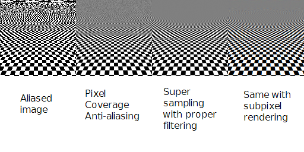
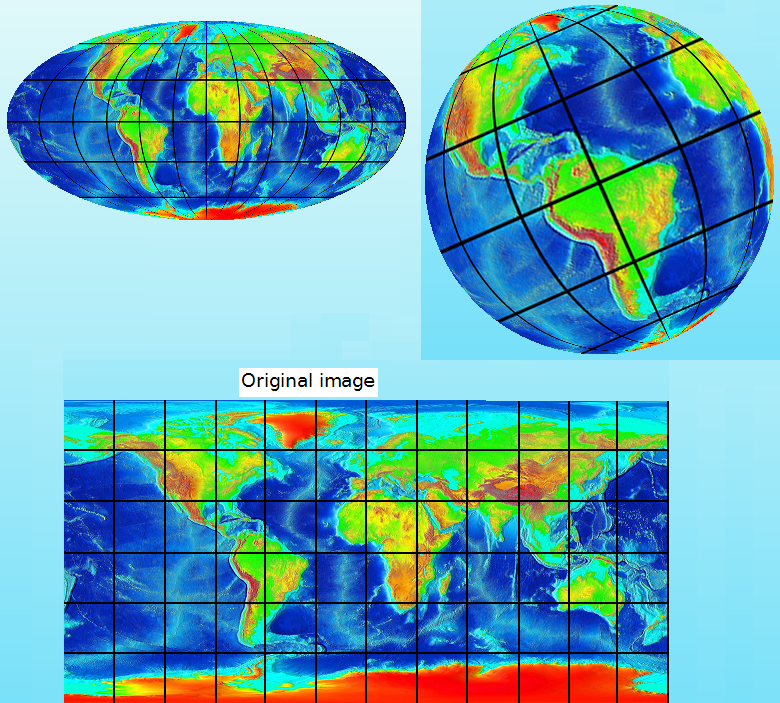
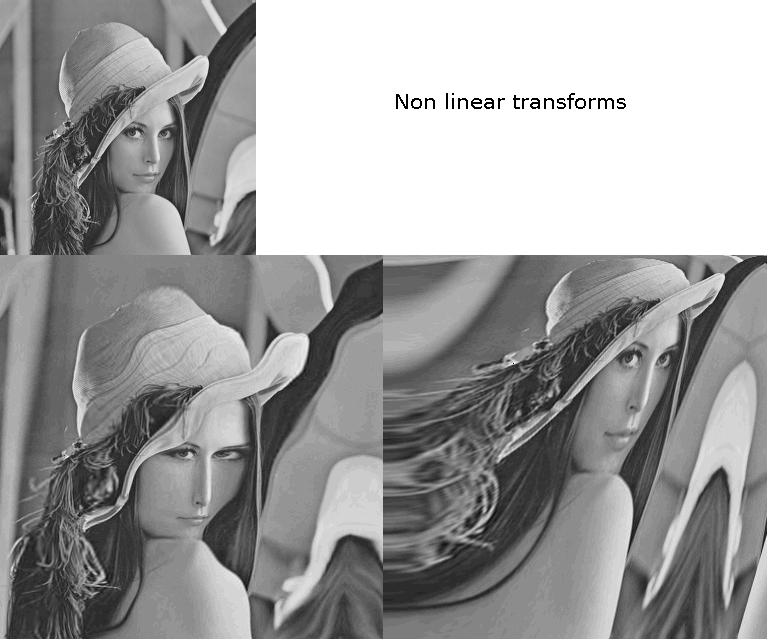
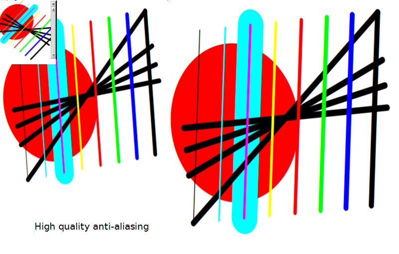

The Morphic 3 ProjectMorphic
3 is a research and development project aimed at building the next
standard in 2D user interfaces. It will be fully zoomeable, and will do
mathematically proved alias-free rendering. In order to achieve these
objectives, several techniques and design features are described. Some
of them are new and others are not, but have never been consistently
applied to a 2D GUI. New! You can see the Cuis and Morphic 3 talk at the Smalltalks conference in Buenos Aires here. History of the ideas behind Morphic 3, and project landmarks:
Independence of Display resolution (1991) Modeling of coordinate systems as objects (4/2007) Alias free rendering based on Signal Processing theory (8/2007) Allow and encourage the use of textures and photos (10/2007) Zoomeable User Interface (7/2008) Demo 3, 9/2008. New rendering algorithm. Uniform use of the anti-aliasing technique Demo 4, 4/2009. Modeling of shapes as a trajectory of a pen
I
have been interested in the construction of high quality user
interfaces for several years. These design ideas reflect my current
understanding on the desirable properties for a 2D user interface
framework. Many of them are not new, but have never been applied to a
2D GUI in a consistent way.
Work on Morphic 3 started in
mid-2007. Since then, several prototypes were built, as experiments and
demonstration of the concepts. They were later discarded, after
teaching me things I used on the next iteration. These demos are some
landmarks in the path already walked. Let me tell you about each of these ideas and landmarks in more detail.
Key idea 1: Independence of display resolution (1991)This
means that the code for application should not care about the pixel
resolution or pixel size of the display device. In the original
context, an application should use all the available screen space in
the best possible way without the programmer needing to code for this,
no matter if the application is run with Hercules, CGA, EGA or other
graphics hardware.
This is the contrary of the recent trend in
"DPI awareness". "DPI awareness" besides requiring developers to know
about pixel resolution, it also requires them to know about pixel size,
making programming more complicated and error prone.
Morphic 3
is simpler. In Morphic 3 there is no concept of pixel. The pixel is
considered a low level primitive, like a cpu register in a high level language. The GUI is
thought at a higher level, in the coordinate systems that makes most
sense to the developer. This application specific geometric space is
projected on the actual display at runtime.
Key idea 2: Modeling of coordinate systems as objects (4/2007)
This
implies the separation of the handling of coordinate systems from the
morphs themselves. A morph should only need to say "I want to use a log
scale", instead of needing to convert every point it draws to World
coordinates himself. Every Morph defines a space and coordinate system.
Its #drawOn: method and the location of its submorphs are
expressed in its own coordinate system.
Although this might
sound fancy for a programmer, we do this kind of things all the time in
the real life. We do it when we do any kind of drawing, or when looking
at a map or street guide. We also do it when we try to fill several
glasses with the same amount of water from a bottle. We even do it when
thinking on how much grass we have left to cut in our backyard, or when
playing with a doll house inside our real house with our daughter. For
all these things we use specific coordinate systems we immediately
discard, without even thinking about them. Each
coordinate system (and not the transformations it performs) is an
object. The coordinate systems are 2D but are not restricted to
Cartesian or linear. Useful nonlinear coordinate systems include polar,
logarithmic, hyperbolic and cartographic projections. Unfortunately,
handling nonlinear coordinate systems precludes the use of many
optimizations that assume that only affine transformations are made.
Therefore it is an experimental feature, whose value/cost tradeoff
still needs research. Separation of the defining properties of
coordinate systems from volatile information. The area a morph is using
in its owner is volatile as it can change anytime as the user or the
application moves, rotates or zooms objects. This volatile information
is stored in Location objects that specify how and were a morph and its
coordinate system are located. A CoordinateSystem object together with
a Location object specifies a geometric transformation between the
inner space they define and the outer space they live in.
Demo 1, 6/2007. Reified CoordinateSystems and LocationsImplementation of CoordinateSystem and Location objects. Implementation of a parallel Morph hierarchy that uses them.
These
new morphs are an integral part of the existing Morphic 2 framework.
Rendering is done via the existing Balloon 2D vector graphics engine in
Squeak. Done to show the value of the ideas of independence of display
resolution and explicit models for coordinate systems.
Key idea 3: Alias free rendering based on Signal Processing theory (8/2007)
The
methods to do anti-aliased 2D images currently in use are
Super-Sampling and Pixel-Coverage. The Balloon engine in Squeak I used
for Demo 1 does super sampling.
For supersampling to effectively
avoid aliasing, the supersampled display should have high enough
resolution to be above the Nyquist frequency of the image. Usually this
is not the case, the super sampled display will also have aliasing
(although less), and aliasing is reduced but not completely avoided.
Pixel
coverage is no better, as it behaves as an infinite resolution
supersampling, but using a very bad filter: A step filter in the
spatial domain. The frequency response of such filter has no real
cutoff frequency, and therefore it doesn't bound aliasing.
The
quest for higher quality resulted in the idea of applying the Sampling
theory (the basis of digital audio and digital photography) for all
rendering. This allows for mathematically proved alias free rendering.
It is done by modeling all the objects to be drawn as continuous
functions that
specify color at each (x, y) point. This functions are properly
filtered and sampled at the actual position of the pixels.
Please see the following image in an LCD screen:  The leftmost image shows much aliasing. The second image uses an approximate pixel coverage.
It is better, but it still shows visible aliasing, especially at high
frequencies. Image 3 uses supersampling with a very high resolution and
careful filtering. It looks quite nice, but it takes about an hour to
render! One of the challenges of this project is to find way to model
filtered continuous functions that are fast enough to render in real time.
Finally, to really follow Sampling theory,
we also need to take into account the final steps: Digital to Analog
conversion: The display screens and the human eye comprise the digital
to analog conversion and the analog filtering stages. Image four takes
this into account, and does subpixel rendering.
Besides, as LCDs
don't do a real analog filtering of the images, some times it is good
to use a digital filter with a cutoff frequency that is slightly lower
than the Nyquist frequency. This will mean a bit softer images, more
pleasing to the eye, but with a little loss of detail.
Key idea 4: Allow and encourage use of textures and photos (10/2007)
To
everybody, resolution independence means vector graphics. Look for
example at Cairo, or Anti Grain Geometry. This produces a toy-like or
cartoon-like look. Instead, include implementations of high quality
image filtering and resampling operations to fully support the use of
textures, photos and photorrealistic art as integral part of GUIs.
Demo 2, 12/2007. Smalltalks-2007. High quality image resampling. Non-linear stuffImplementation of high quality image zoom based on "Interpolation Revisited", and support for non-linear coordinate systems. You can read more at Morphic 3 at Smalltalks
2007. Based
on the original image below (with parallels and meridians as straight
lines), it can render the two at the top, using appropriate coordinate
systems.

These images are created from the smaller one at the top, and they show the effect of other non-linear coordinate systems.

Experimenting
with this system made me realize that a good design should separate the
specification of the shapes (the drawing primitives) from the
anti-aliasing strategy done by the rendering engine.
Key idea 5: Zoomeable User Interfaces
Morphic
3 will support zooming the whole user intarface by small fractions, to
accomodate it to the user preference regardless of the display
hardware. It can also support zooming over a very wide range of zoom
factors, like Google Earth, Microsoft's Seadragon, and Jef Raskin's
Archy. Note that these are specific purpose applications, even more,
for two of them, their only purpose is to demonstrate the very concept
of zooming user interfaces. Instead, Morphic 3 is a general purpose
framework to build any kind of applications.
Demo 3, 9/2008. New rendering algorithm. Uniform use of the anti-aliasing technique
Experiments
with a new rendering strategy that only paints each pixel once. It also
eases the use of non-linear coordinate systems and extreme zooming.
This new way of drawing the whole Morphic world also allows multiple
views (EyeMorphs) at different zoom factors, looking at the same or
different areas of the world. It also supports many Displays, perhaps
on different machines. In addition, it makes the use of whole pixel or
subpixel anti-aliasing a property of the framework. Handling the
anti-aliasing at the framework level allows the user to customize the
applications to the type and properties of the actual display hardware
in use. It also simplifies the implementation of the drawing
primitives, as they are just the continuous functions that the engine
will filter and sample as needed.
This requires reimplementing all the
display primitives, and is not compatible with the existing Morphic 2
drawing strategy. Therefore, it includes a first sketch of a Morphic 3
as a separate framework from the existing Morphic 2.
Implementation
of basic drawing primitives based on Sampling theory. Implementation of
high quality sub-pixel anti-aliasing for them. Implementation of
MorphicEye and a OldMorphicEyeMorph to integrate Morphic 3 worlds in
Morphic 2.
Take a look at the next picture. This image
applies all I learnt about aliasing, and it looks better than anything
the usual techniques can produce. 
Demo 4, 4/2009. Modeling of shapes as a trajectory of a penExperiments
for a model of shapes that can be modeled as the trajectory
of a pen. This makes many kinds of shapes fit into the new approach to
anti-aliasing using just one implementation. These will include lines,
geometric figures, and curves.
Project plansMorphic
3 shows a lot of potential for enhancing the quality of GUIs. It also
makes evident the need for a huge amount of work to reach its
objectives, including several interesting open problems that need real
research.
But I need to build a system that is ready for application development
in, let's say, six months. In 9/2009 I focused on the problem of
finding a way ahead for Morphic 3. One that can be realistically
expected to succeed, but without giving up on the new and desired
properties, as they would greately simplify the design of graphical
applications while enhancing their features and quality.
Morphic 3 in Morphic 2: Build a first usable releaseThe
approach is to build a new hierarchy of morphs that can be used in the
existing Morphic 2 world, without changing existing morphs. In this
way, additional new morphs and rendering primitives might be added as
needed. This also means that some of the more ambitious goals are left
for later work.The objectives for this first phase of the project are (for the new morphs): Independence of screen resolution
New geometry model, restricted to Cartesian systems and affine transformation
High quality anti aliasing, based on Signal Processing therory Use of textures and photos as key parts of GUIs Integrated in the existing Morphic world The
first phase is already started, and I expect to have a usable release
around mid-2010. Later, I will be adding morphs and drawing primitives
until they cover all the functionality in the system and all the older
morphs can be discarded. Then it will be the time for the next phase:
Morphic 3 as a separate frameworkThe objectives for later steps in the project involves a complete rewrite of Morphic, to allow for:
Non linear coordinate systems New rendering algorithm for the world Zoomeable User Interface Multiple EyeMorphs, Hands, Fingers and Displays This
rewrite of Morphic will use the morphs done for the first phase, so all
the tools, rendering primitives, etc will already be done. Most of the
work will be done at the framework mechanics, although non-linear
systems will require some enhancements to the filtering of the
functions that specify the shapes. There will be a lot of activity in 2010, so stay tuned!
|